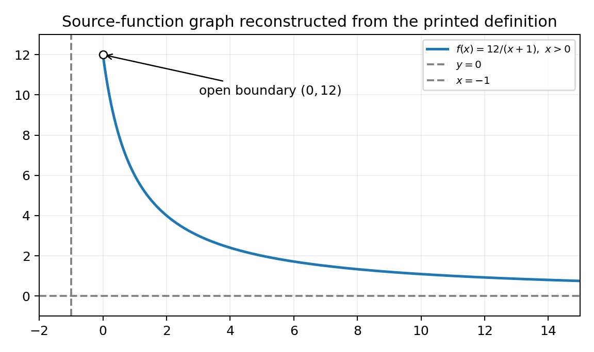
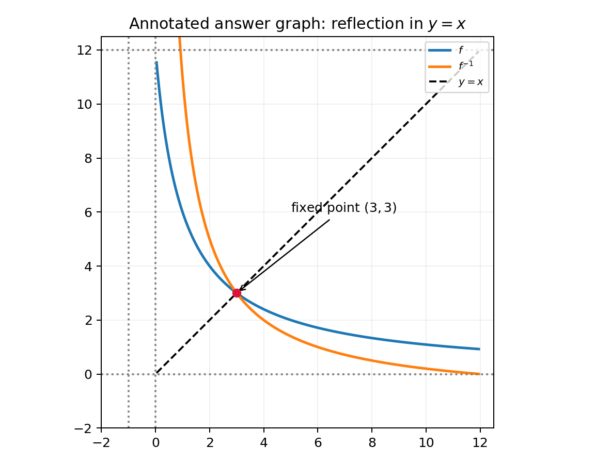

2. The function $f$ and the function $g$ are defined by
$$f(x)=\frac{12}{x+1},\quad x>0,\ x\in\mathbb R$$
$$g(x)=\frac52\ln x,\quad x>0,\ x\in\mathbb R$$
(a) Find, in simplest form, the value of $fg(e^2)$. (2)
(b) Find $f^{-1}$. (3)
(c) Hence, or otherwise, find all real solutions of the equation
$$f^{-1}(x)=f(x).$$ (3)
[8 marks: (a)2, (b)3, (c)3]
Read $fg(e^2)$ as $f(g(e^2))$. First use $\ln(e^2)=2$:
$$g(e^2)=\frac52\ln(e^2)=\frac52(2)=5.$$
Order matters. $fg(e^2)$ means $f(g(e^2))$: apply $g$ first to $e^2$, then feed the numerical output into $f$. Getting the order right is the whole method mark; swapping to $g(f(e^2))$ answers a different question.
Definition in play. $g(x)=\tfrac52\ln x$ relies on the log fact $\ln(e^2)=2$, since $\ln$ and $\exp$ are inverse functions. That single simplification is what makes the inner evaluation exact rather than a messy decimal.
Intermediate logic. $g(e^2)=\tfrac52\ln(e^2)=\tfrac52\times2=5$; the factor of $2$ from the logarithm cancels neatly with the fifth-halves coefficient to leave the clean integer $5$, which will slot straight into $f$.
Presentation. Write $fg(e^2)=f(g(e^2))$ first, then evaluate the inner function to a single number. Transfer cue: whenever a composite input is an exponential like $e^k$ and the outer-inner functions involve $\ln$, use $\ln(e^k)=k$ immediately to reduce the inner stage to a plain number.
Reinforcement. The symbol nearest the input acts first, so in $fg(e^2)$ the function $g$ consumes $e^2$ and $f$ consumes $g$'s output; naming this order aloud before computing prevents the reversed-composite slip. The exponential input is a gift because $\ln(e^2)=2$ collapses the inner stage to a whole number rather than an awkward surd.
Now apply $f$:
$$fg(e^2)=f(5)=\frac{12}{5+1}=2.$$
Completing the composite. The second stage substitutes the inner result $5$ into $f(x)=\dfrac{12}{x+1}$; the arithmetic is a single fraction, and correctness here secures the accuracy mark.
Intermediate logic. $f(5)=\dfrac{12}{5+1}=\dfrac{12}{6}=2$; the denominator simplifies to $6$, which divides $12$ exactly, so the composite value is the integer $2$ with no rounding needed.
Domain check. The inner output $5$ must be a legal input for $f$, whose domain is $x>0$; since $5>0$ the substitution is valid, so no value is produced outside where $f$ is defined. Skipping this check risks quoting a number from an illegal input.
Presentation. Show $f(5)=12/(5+1)$ then the simplified $2$, and add a short domain remark. Transfer cue: after evaluating a composite, always confirm the intermediate value lies in the outer function’s domain before boxing the final number.
Denominator arithmetic. The key simplification is $5+1=6$, and $6$ divides $12$ exactly, so no fraction survives; a value that failed to simplify would hint at an arithmetic slip in the inner stage. Always confirm the intermediate output $5$ is a legal input by checking it against the domain $x>0$ before boxing the answer.
Let $y=f(x)$:
$$y=\frac{12}{x+1}.$$
Clear the denominator:
$$y(x+1)=12\Rightarrow xy+y=12.$$
Strategy. To invert $f(x)=\dfrac{12}{x+1}$ we set $y=f(x)$ and clear the fraction; making $x$ the subject constructs the inverse rule, exactly as for any single-fraction function.
Definition in play. $f^{-1}$ undoes $f$: if $y=f(x)$ then $x=f^{-1}(y)$. So the algebraic act of solving for $x$ in terms of $y$ is precisely how the inverse is found.
Intermediate logic. Multiplying $y=\dfrac{12}{x+1}$ by $(x+1)$ gives $y(x+1)=12$; the multiplication is legitimate because the domain $x>0$ makes $x+1>1\ne0$. Expanding to $xy+y=12$ produces an equation linear in $x$, ready to be rearranged in the next step.
Presentation. Record the cleared line $y(x+1)=12$ before expanding so the method mark is visible. Transfer cue: the opening for inverting any $\dfrac{k}{x+c}$ is identical — set $y=\dots$, multiply out the denominator, then collect $x$; learn the opening move, not a memorised answer.
Opening move mastery. Every single-fraction inverse begins the same way: write $y=f(x)$, multiply out the denominator, and expand to a linear equation in $x$. Here that yields $xy+y=12$. The domain $x>0$ guarantees $x+1>1$, so the multiplication can never be by zero — a validity point worth a silent tick before proceeding.
Solve for $x$:
$$xy=12-y$$
$$x=\frac{12-y}{y}=\frac{12}{y}-1.$$
Swap variable names:
Finishing the inverse. From $xy+y=12$, isolate the $x$-term and divide by its coefficient $y$; this yields $x$ purely in terms of $y$, which after relabelling is $f^{-1}$.
Intermediate logic. $xy=12-y$, so $x=\dfrac{12-y}{y}=\dfrac{12}{y}-1$; splitting the single fraction into $\dfrac{12}{y}-1$ is optional but gives a cleaner form that also makes the inverse’s behaviour easy to read. Renaming $y\to x$ presents the rule as $f^{-1}(x)=\dfrac{12}{x}-1$.
Why the split helps. The form $\dfrac{12}{x}-1$ shows an asymptote structure directly, which is convenient when the domain of $f^{-1}$ is discussed in the next step and when solving the fixed-point equation in part (c).
Presentation. Show $x=\dfrac{12-y}{y}$ then the split form, then the boxed relabelled rule. Transfer cue: after isolating $x$, split $\dfrac{a-y}{y}$ into $\dfrac{a}{y}-1$ to expose asymptotes and simplify any later substitution.
Why split the fraction. Writing $\dfrac{12-y}{y}$ as $\dfrac{12}{y}-1$ is more than tidiness: the split form reveals the reciprocal structure that makes the inverse's asymptotes obvious and makes the part (c) fixed-point substitution far cleaner. Relabelling $y\to x$ at the end is only a naming convention; the underlying rule is untouched by the swap.
For the original domain $x>0$, $x+1>1$, so
$$0<\frac{12}{x+1}<12.$$
Thus the original range is $0<y<12$, and therefore

Why find the inverse domain. A fully-specified inverse needs its domain, and $\operatorname{Dom}(f^{-1})$ equals the range of the original $f$. So the task is to determine every output $f$ can produce on $x>0$.
Intermediate logic. For $x>0$ we have $x+1>1$, so $\dfrac{12}{x+1}$ is positive and strictly less than $12$; as $x\to0^+$, $f\to12^-$, and as $x\to\infty$, $f\to0^+$. Hence the range is $0 Notation discipline. Range is stated in $y$: $0 Presentation. Show the two-sided bound derivation, then state range in $y$ and inverse domain in $x$ as separate labelled facts. Transfer cue: to get an inverse’s domain, bound the original function using its domain restriction, then translate that range word-for-word into an $x$-statement. Notation drill. State the original range using $y$ and the inverse domain using $x$ as two distinct lines; collapsing them into one mixed-variable statement is the exact fault the repair note corrects and a routine mark-loser on inverse questions.
Substitute the two rules:
$$\frac{12}{x}-1=\frac{12}{x+1}.$$
Because the inverse domain is $0<x<12$, both denominators are non-zero.
Strategy. The equation $f^{-1}(x)=f(x)$ is solved by substituting both explicit rules and clearing fractions; “hence” signals we should reuse the inverse just found rather than start afresh.
Definition in play. Setting $\dfrac{12}{x}-1=\dfrac{12}{x+1}$ equates the two functions at a common $x$; the solutions are the $x$-values where the graphs of $f$ and $f^{-1}$ intersect, which for many functions lie on the line $y=x$.
Intermediate logic. Both denominators, $x$ and $x+1$, are non-zero on the inverse domain $0 Presentation. Write the substituted equation and a one-line note that both denominators are non-zero on $0 Setting up cleanly. Substitute both explicit rules to get $\dfrac{12}{x}-1=\dfrac{12}{x+1}$, and state on the page that both denominators are non-zero on $0 Why "hence" helps. Reusing the inverse from part (b) instead of re-deriving it saves time and keeps the algebra consistent; the geometric meaning is the intersection of $f$ with its own reflection $f^{-1}$. Transfer cue. Before clearing variable denominators, always record the domain that keeps them non-zero.
Multiply by $x(x+1)$:
$$12(x+1)-x(x+1)=12x$$
$$12x+12-x^2-x=12x$$
$$x^2+x-12=0$$
$$(x+4)(x-3)=0.$$
Clearing to a quadratic. Multiplying both sides by $x(x+1)$ removes every fraction in one move and produces a polynomial equation, which is far easier to solve than a difference of two rational expressions.
Intermediate logic. The left side becomes $12(x+1)-x(x+1)$ and the right becomes $12x$; expanding gives $12x+12-x^2-x=12x$, and cancelling $12x$ from both sides leaves $-x^2-x+12=0$, i.e. $x^2+x-12=0$. Factorising, $(x+4)(x-3)=0$ exposes the two candidate roots directly.
Why factorise rather than use the formula. The constant $-12$ factors cleanly as $(+4)(-3)$ with a middle coefficient $+1$, so factorisation is quicker and less error-prone than the quadratic formula and keeps the working exact.
Presentation. Show the expansion, the cancellation of $12x$, the tidy quadratic, and the factorised form on separate lines. Transfer cue: clear all denominators by the product of them, simplify to $=0$, and try integer factorisation before reaching for the quadratic formula.
Clearing strategy. Multiply through by the product $x(x+1)$ of both denominators; this single move removes every fraction and yields a plain quadratic. Cancelling the common $12x$ from both sides then leaves $x^2+x-12=0$. Prefer integer factorisation $(x+4)(x-3)$ over the quadratic formula, since the constant $-12$ splits cleanly with a unit middle coefficient.
The algebraic candidates are $x=-4$ and $x=3$. Reject $-4$ because $0<x<12$ (and the original domain also requires $x>0$).

Selecting valid roots. A factorised quadratic offers algebraic candidates, but only those inside the relevant domain are genuine solutions; filtering is where the final accuracy mark is won or lost.
Intermediate logic. The candidates are $x=-4$ and $x=3$. The inverse domain is $0
Geometric meaning. At $x=3$, $f(3)=\dfrac{12}{4}=3$, so the point $(3,3)$ lies on the line $y=x$; this is a genuine fixed point where $f$, $f^{-1}$ and the mirror line all meet, which is exactly why the equation $f^{-1}(x)=f(x)$ has a solution there.
Presentation. List both candidates, state the rejection reason explicitly, then box the surviving root. Transfer cue: after solving any equation built from a restricted-domain function, test each candidate against every domain condition and discard those that fail, giving the reason.
Filtering with reasons. List both candidates $x=-4$ and $x=3$, then reject $-4$ explicitly because it violates $0